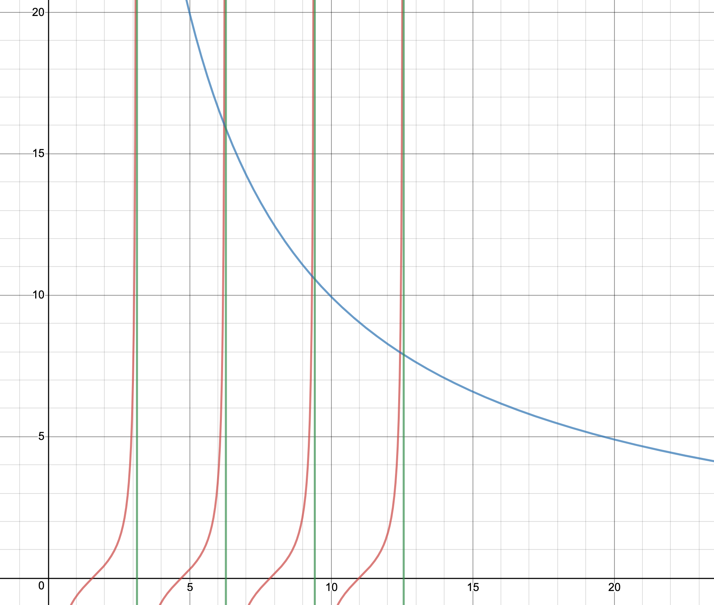
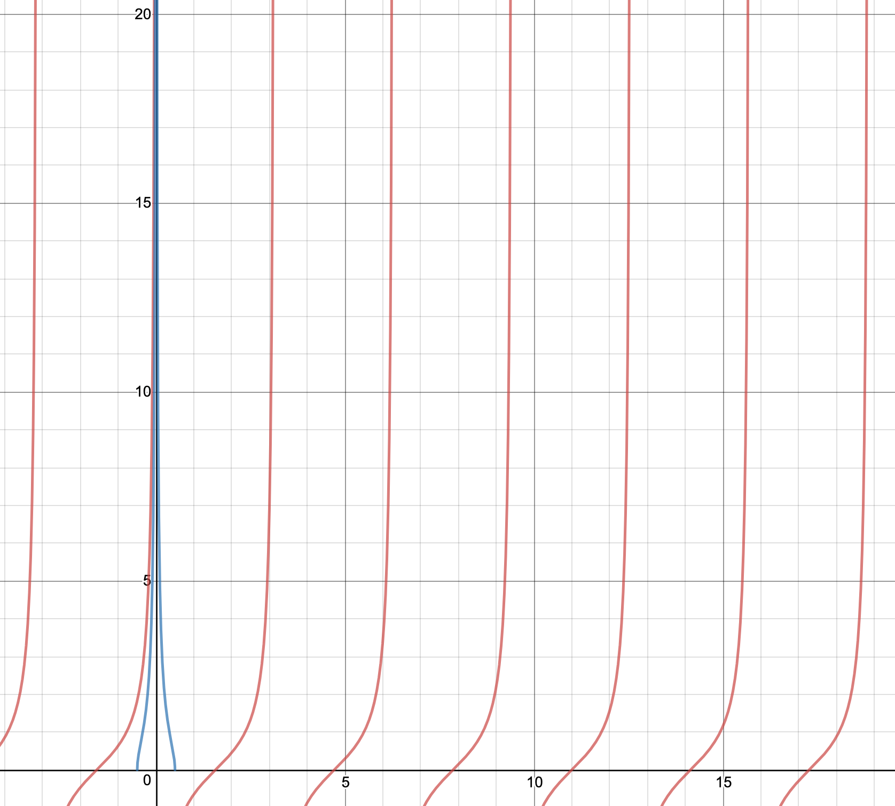
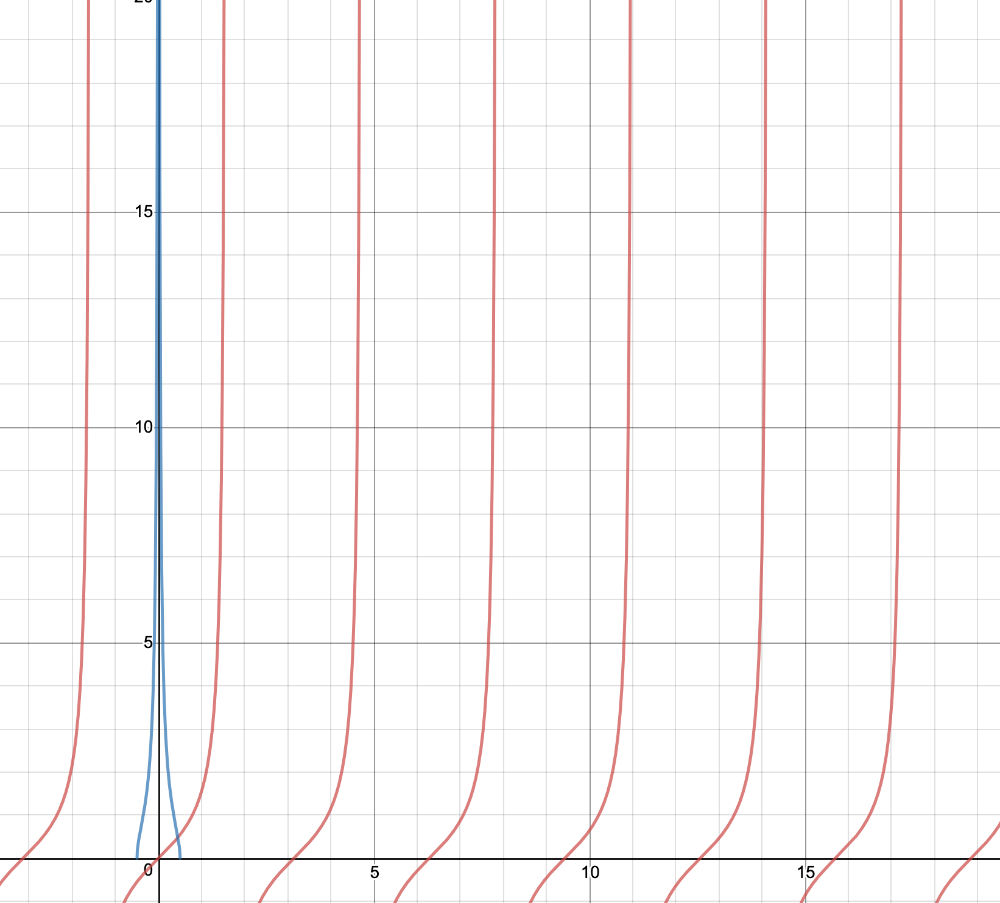
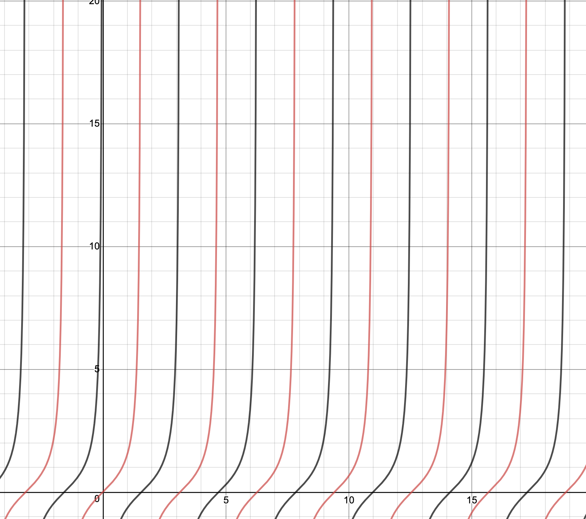

Griffiths Quantum Mechanics 2nd Edition: Problem 2.29
This problem is pretty fun, although to understand it, you probably should have read and understood the section in Griffiths on the the finite well potential
(as I will be referencing specific formulae that Griffiths thankfully derives for us!). Let's start by simply writing out the general form of the wavefunction that we
are trying to find. We know that since we are searching for the odd bound solutions for this potential, our wavefunction will be of the form:
$$\psi_{odd}(x) \ = \ \left\{
\begin{array}{ll}
Ae^{-kx} & \text{when} \ \ a \ < \ x \\
B\sin(lx) & \text{if} \ \ -a \ < x \ < a \\
-\psi_{odd}(-x) & \text{if} \ x \ < \ -a
\end{array}
\right.$$
$$k \ = \ \frac{\sqrt{-2mE}}{\hbar}, \ l \ = \ \frac{\sqrt{2m(E \ + \ V_0)}}{\hbar}$$
Notice that we have omitted the C\cos(lx) term from the wavefunction between $-a$ and $a$. This is becasue we are interested in the odd solutions to the finite well potential,
and $\cos(x)$ is an even function, while $\sin(x)$ is odd (linear combinations of even and odd function will be neither even nor odd, so $C \ = \ 0$). Due to Born's criteria, we know
that $\psi$ and $\text{d}\psi/\text{dt}$ are continuous at $a$ and $-a$. Chosing $a$, we find that:
$$\Rightarrow \ Ae^{-ka} \ = \ B\sin(la)$$
$$\Rightarrow \ -kAe^{-ka} \ = \ lB\cos(la)$$
Just as Griffiths does in the example for the even bound solutions, we divide the second equation by the first, and make the substitution $z \ = \ la$ and $z_0 \ = \ \frac{a}{\hbar}\sqrt{2mV_0}$.
We can then manipulate to get the transcedental equation representing the energy states for this potential:
$$\Rightarrow \ Ae^{-ka} \ = \ B\sin(la) \ \Rightarrow \ -kAe^{-ka} \ = \ lB\cos(la) \Rightarrow \ \frac{-kAe^{-ka}}{Ae^{-ka}} \ = \ \frac{lB\cos(la)}{B\sin(la)} \ \Rightarrow \ -k \ = \ l\cot(la)$$
$$-\cot(z) \ = \ \sqrt{(z_0/z)^2 \ - \ 1}$$
Let us now plot the two sides of this transcedental equation, and vary $z_0$, therefore varying the depth (magnitude of the potential) and width of the finite square well. If we chose a very
large $z_0$ (representing a large $a$ and large $V_0$, therefore a wide and deep well), then we can see that the intersection between the two functions approaches $z \ = \ n\pi$, with $n \ \in \ \mathbb{Z}$. If you
don't believe me, look for yourself:

In this graph, the blue line is the graph of $f(z) \ = \ \sqrt{(100/z)^2 \ - \ 1}$, the red lines are the graph of $f(z) \ = \ -\cot(z)$, and the green lines are drawn at $x \ = \ \pi, \ 2\pi, 3\pi, \ \text{and} \ 4\pi$.
As can be seen in the picture, the intersections between the blue line and the red line seem to happen very close to the green lines ($z \ = \ n\pi$). The intersections get even closer to these lines as $z_0$ increases.
Now, we know that $z \ = \ la \ = \ a\frac{\sqrt{2m(E \ + \ V_0)}}{\hbar}$.
Since $z \ = \ n\pi$, we get $n\pi \ = \ a\frac{\sqrt{2m(E \ + \ V_0)}}{\hbar}$. Since we got one half of the solutions to the infinite square well energies with width $2a$ with the even solutions, we will follow
the same form with the odd solutions. Since $z \ = \ n\pi$, with $n \ \in \ \mathbb{Z}$, this is the same thing as writing $z \ = \ n\pi/2$, with $n$ as an even integer. This means that when we rearragne the previous
equation, we get:
$$E_n \ + \ V_0 \ = \ \frac{n^2\pi^2\hbar^2}{2m(2a)^2}$$
Exactly the same as in the textbook, except this time $n$ is taken to always be even, therefore completing the sets of energies that satisfy the infinite square well potential (exactly what Griffiths promised!).
Ok, we can now examine the case where $z_0$ is very small. As can be seen from the graph of $-\cot(z)$, the last physically realizable (positive, since $z \ = \ la$, and $z, \ a$ are both real and positive) value of $z$ occurs
at $z \ = \ \pi/2$. After this, the two graphs look something like this, with no intersection with positive $z$:

This means that there won't always be an odd bounded solution for the finite square well potential. Specifically, if $z_0$ is really small (less than $\pi/2$), then no solution will exist. However, with the even wavefunction, it
is very important to note that there will always be a solution for this potential. This is because the last physically realizable $z$ value for the graph of $\tan z$ is $z \ = \ 0$, therefore an intersection with positive
$z$ can always be found, and therefore, there is always an even solution:

Another cool thing that I noticed was that the graphs of $\tan z$ and $-\cot z$ are "complimentary", as they seem to fit almost fit together, filling up the missing intervals on their individual graphs. This phenomenon
can be best appreciated through simply looking at the graphs of these functions:

Where the black line is $f(z) \ = \ \tan z$ and the red line is $f(z) \ = \ -\cot z$.